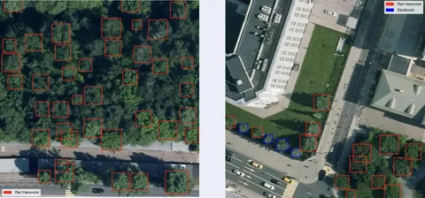

Год назад в Яндекс Картах в Москве и Петербурге появились трёхмерные деревья, которые добавляют реалистичности и помогают пользователям лучше ориентироваться на местности. В этом посте Стас Лебедев, разработчик группы AI-картографирования, рассказывает, как устроен ML, который рассаживает деревья в Картах.
Разработанная модель умеет три вещи: определять деревья на аэросъёмке, отличать лиственные породы от хвойных и оценивать размеры деревьев. Каждому дереву подбирается подходящая 3D-модель, которую размещают на карте. Фактически моделей всего две: лиственная или еловая, а для эффекта разнообразия они масштабируются и немного поворачиваются.
Работа с данными
Основная сложность была в том, чтобы собрать и правильно обработать данные. Нашли несколько источников разметки — каждый со своими нюансами. В итоге использовали два:
— разметку от сообщества картографов «Народная карта» — она содержала несколько тысяч деревьев с достаточной точностью, но этого было мало для обучения модели;
— один из публичных датасетов геоданных — показал хорошую точность, но низкую полноту; немного уступал данным от картографов и отличался по параметрам съёмки.
Обучение
Модель предобучили на публичном датасете и разметке картографов. Она смогла базово отличать деревья, но качество предсказаний было низким, особенно по полноте. Помогла доразметка с «активным обучением»: прицельно размечали изображения, на которых модель часто сомневалась и возвращала предсказания рядом с порогом принятия решения.
За два месяца дополнительно разметили около 60 тысяч деревьев в Москве, Петербурге и Калининграде. При этом модель определила 4 миллиона деревьев за два дня — это показывает, как автоматизация сокращает трудозатраты на разметку данных.
Архитектура
В основе архитектуры — классическая UNet-модель с ResNet в качестве бэкбона. Нейросеть предсказывала попиксельную карту вероятностей наличия дерева в каждой точке. Изначально поиск деревьев был тесно связан с поиском точечной дорожной разметки (стрелочки на асфальте). На абстрактном уровне — это очень похожие вещи. Поэтому разработанные решения базируются на одних и тех же идеях, почерпнутых из этой статьи.
Проблему с недооценкой количества деревьев решали с помощью focal loss — модифицированной кросс-энтропийной функции, которая увеличивает влияние сложных для локализации объектов. Дополнительно повысили вес ошибок, связанных с пропусками, чтобы модель не игнорировала малозаметные деревья. Без такого перераспределения потерь предсказания смещались в сторону фона — то есть модель чаще выбирала класс «нет дерева», чем «есть дерево».
Модель научилась хорошо определять, где находится дерево, но также ей нужно было понимать, какого оно типа и какая 3D-модель для него нужна. А для этого надо понять ширину и высоту. Мы обратили внимание на модель DeepForest, которая плохо находила центры, но хорошо предсказывала ширину. Решили объединить усилия: нашей моделькой находили локализацию деревьев, а DeepForest просили сказать, какой они ширины. В результате получили данные, на которых смогли обучить модель предсказывать ширину по локализации: где находится дерево и как выглядит этот маленький кусочек снимка.
Благодаря картографам у нас также были данные вида: «это дерево, и оно имеет ширину Х и высоту Y». Мы уже научились находить дерево и определять его ширину. Осталось взять имеющиеся данные и научиться с их помощью предсказывать высоту. Вуаля — мы получили модель, которая умеет локализовывать (находить местоположение) + вычислять ширину (по локализации) + вычислять высоту (по ширине и тому, как дерево выглядит).
Результаты и планы
В итоге модель помогла разметить для Москвы почти 3 млн деревьев, а для Петербурга — 1,1 млн деревьев.
Сейчас система работает на аэросъемке, но в будущем есть планы перевести её на спутниковые снимки. Это ускорило бы обновление карт, поскольку спутниковая съёмка дешевле и проводится чаще. Однако разрешение спутниковых снимков ниже, и для такого перехода нужны дополнительные исследования и более сложные модели.
ML Underhood
